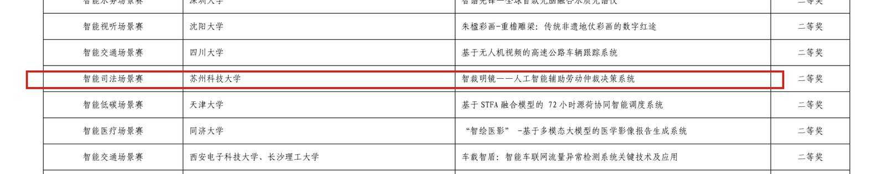
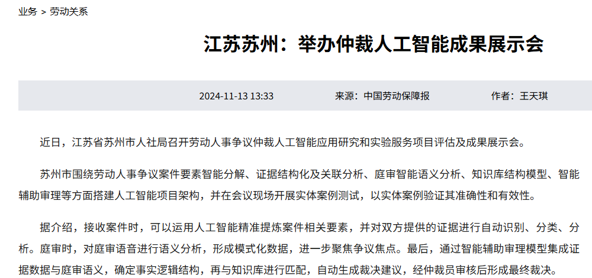
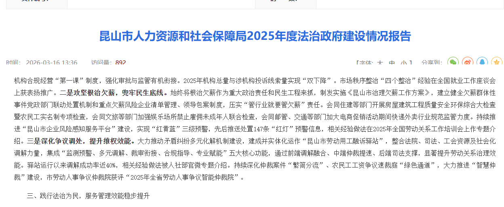
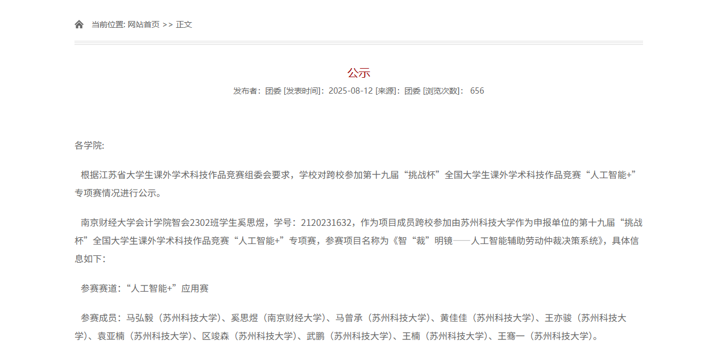

大模型辅助劳动仲裁决策系统 · 全流程智能辅助办案
把仲裁员最耗时的三件事——翻卷宗、找法条、写裁决——压缩成一条每一步都能回溯到原文的人机协同链路。 AI 负责把非结构化卷宗变成结构化的候选结论，人负责判断与署名。
劳动仲裁案件量逐年攀升，而仲裁流程高度依赖人工。表面看是慢，拆开看是三个具体的卡点——而这三个卡点， 恰好对应三种不同的产品解法。
裁决结果过度依赖仲裁员个人经验，同一类争议在不同仲裁员手里可能走出不同结论，"同案不同裁"直接损伤公信力。
→ 产品解法：把"经验"沉淀成可检索的类案与法条依据，让结论有出处。
事实采信过程存在于仲裁员内心，卷宗里"谁说了什么、哪份证据支持"没有结构化沉淀，事后复核几乎无从下手。
→ 产品解法：把事实与证据做成可碰撞、可标红的矩阵，让心证外化。
法规、司法解释、指导案例、地方裁审口径分散在多个系统，人工逐条比对如同大海捞针，且极易漏检。
→ 产品解法：混合检索 + 效力加权 + 重排，把"找"变成"推"。
这是政务内网系统：数据不出内网、模型需本地化部署；使用者是四五十岁的仲裁员，不是技术用户； 一次错误结论的代价远高于多花十分钟。所以这套系统的设计目标从来不是"自动化裁决"，而是 "让 AI 的每一步中间态都被人看见、被人否决"。
在动手画第一个页面之前，我先给自己定了四条不可让渡的约束。它们是判断"某个交互该不该做"的唯一标准。
系统里没有"生成裁决书"这个按钮，只有"生成裁决建议"。所有 AI 产出的内容默认处于"待确认"状态，界面上不出现"完成""已裁决"这类词。
裁决理由里的每句话都挂着来源角标，点一下直接跳到卷宗对应页码并高亮原句。没有出处的句子，不允许进入草案。
要素、事实、证据、法条四个中间产物全部显式呈现、可编辑、可删除。用户能改的中间态越多，对最终结果的信任就越高。
仲裁员一天要处理几十上百个要素，多点一次就是多一次出错机会。凡是需要重复的操作，一律做批量、做快捷键、做就近操作。
从一份杂乱的 PDF 卷宗，到一份可签署的裁决书草案。红色文字是这个环节"为什么必须存在"。
批量拖拽上传，自动拆分申请书、证据材料、庭审笔录；扫描件走 OCR 与版面还原，按页建立索引。
自动生成诉求清单、当事人关系、事实时间轴、证据索引，形成结构化"案件画像"。
把争议焦点与证据逐格比对，输出支持 / 矛盾 / 缺失三种状态，冲突项自动标红。
语义 + 关键词混合召回，按法律效力加权重排，推送适用法条与相似案例。
按"结论—理由—法条"三段式生成裁决书草案，分段采纳、逐段改写，改动回流成反馈。
复杂系统的交互设计，不是把功能排好看，而是预判用户在第二十分钟会想放弃的那个瞬间，然后提前把它拆掉。
仲裁员的真实工作循环是：读一段卷宗 → 对一条依据 → 写一句话。传统系统把这些拆成三个页面，每切换一次就丢失一次上下文。
做法固定三栏：左侧卷宗树与缩略图，中间原文阅读器（要素直接高亮在原文上），右侧 AI 助手（对话 + 结构化卡片）。 三栏各自独立滚动，中间栏宽可拖拽。
为什么栅格布局对应的是认知动作，不是功能模块。看完即用，用完即写，视线不离开屏幕中央。
用户第一次看到"月工资 8,000 元"这张卡片时，第一反应不是"真准"，而是"你从哪儿看出来的"。如果这一步答不上来，后面所有功能都白做。
做法正向：点要素卡片 → 自动滚到原文对应段落并高亮，同时左侧卷宗树标记页码。 反向：在原文里框选任意文本 → 浮出"提升为要素"，用户可指定要素类型，直接补进结构化结果。
为什么双向锚定把"验证成本"压到一次点击。用户越容易验证，就越愿意采纳；也顺带解决了模型漏抽取的人工补录问题。
纯粹用对话做事实认定，结果是一团散落的文字，既没法复核也没法交接。仲裁庭合议时，大家需要的是同一张表。
做法行是争议焦点，列是证据编号，格子三态：支持 / 矛盾 / 缺失。 点格子直接跳到该份证据原文；整列全空自动汇总成"证据缺失提示"。
为什么表格是最低成本的对齐工具。它同时是三重产物：仲裁员的自检清单、合议时的讨论底稿、二审复核时的说明材料。
| 争议焦点 | 证1 合同 | 证2 工资流水 | 证3 考勤 | 证4 聊天记录 |
|---|---|---|---|---|
| 劳动关系存续期间 | ✓ | ✓ | ✕ | ✓ |
| 月工资标准 | — | ✓ | — | ✕ |
| 未签书面劳动合同 | ✕ | — | — | ✓ |
| 离职原因 | — | — | — | 缺失 |
给一份 12 段、四千字的草案配一个"采纳"按钮，用户的心理活动只会是：要么全信，要么不用。中间没有灰度，工具就进不了工作流。
做法草案按段落切开，每段自带来源角标（卷宗页码 / 证据编号 / 法条序号），逐段"采纳 / 改写 / 删除"，顶部实时显示"已确认 3/12 段"。 改写内容与删除动作一并回流，成为模型的偏好反馈。
为什么分块把决策成本降到"这一段我认不认"，用户从"审一份文书"变成"过一遍清单"。 同时，被改写的段落天然就是高质量训练样本——这条链路让人工审阅顺带完成了数据飞轮。
项目团队分工里，我承担的是"把想法变成能跑的系统"这一段——数据怎么洗干净、检索怎么召回、模型怎么输出结构化结果、界面怎么让人敢用。
以下信息均可公开查证，链接附在条目上。
苏州科技大学虚拟现实实验室与昆山市周市镇人民政府合作立项，面向基层劳动仲裁场景做智能化辅助。
报道显示，苏州人社局围绕案件要素智能分解、证据结构化及关联分析、庭审智能语义分析、知识库结构模型、智能辅助审理搭建架构，现场用实体案例做测试。这五个环节与本项目的模块划分一一对应——说明这条路在 2024 年底就已经被推到"实体案例验证"阶段，而不是停留在 demo。 中国劳动保障报 ↗
周市镇与苏科大区块链产业学院产学研合作会议，明确围绕低碳环保、数字人、康复医疗、低空经济及大模型辅助智慧劳动仲裁等方向合作。 校方通稿 ↗
第三届全国人工智能应用场景创新挑战赛（呼和浩特）种子组二等奖，与清华、北大等 115 支高校及企业团队同场竞技。 学院喜报 ↗
申请人：昆山市数据局、苏州科技大学；公开号 CN121169628A，2025-12-19 公开。技术方案涵盖卷宗预处理、法条混合检索与事实对应、大模型裁决书生成、RLHF 反馈优化四个模块。 专利原文 ↗
昆山市人社局 2025 年度法治政府建设情况报告：持续推进"智慧仲裁"建设，市劳动人事争议仲裁院获评全省智能仲裁院。 政府公报 ↗
以下为公开报道与官方名单的原始截图，可直接核对；点标题可跳原文。




做完这个项目我最大的收获，不是"会调大模型"，而是摸清了一类系统的通用骨架：AI 先出候选，专家低成本审阅，修正回流成数据。 任何"专业判断 + 大量非结构化材料"的场景，都是同一道题。
建筑病害巡检本质上也是这件事：无人机与点云先给出缺陷候选框，标注员或工程师只需要"审阅—修正—确认"， 误检漏检回流再训练。把人放在回路里，而不是把人替换掉——这条原则在仲裁院成立，在工地同样成立。
病害框、提取要素、生成段落，本质都是"待确认的建议"。界面语言必须让用户一眼看出这一点。
一次点击能验证、一次点击能修改，用户才会用。验证路径超过两步，再准的模型也会被绕过。
专业用户的每一次改动都是最贵的标注数据。产品设计时就要把"改动"结构化地存下来。